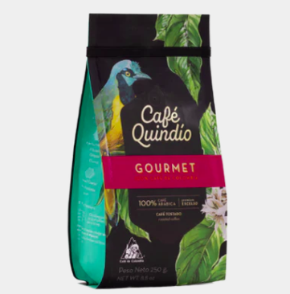

Café Gourmet
Precio de oferta$30.000,00
El café gourmet del Quindío, Colombia, es una auténtica joya que captura la esencia de la
excelencia
cafetera colombiana. Elaborado con la más fina selección de granos provenientes de las mejores
fincas cafeteras de la región, este café ofrece una experiencia sensorial incomparable.
DETALLES DEL PRODUCTO:
CAFÉ 100% COLOMBIANO
Café de Origen Quindío
Comprar
Café Vanilla
$55.700,00
En la encantadora región de Salento, Quindío, conocida por sus paisajes exuberantes y vibrantes
tradiciones, se cultiva un café excepcional que captura la esencia de su entorno. Este café
proviene de fincas donde se selecciona con esmero una pequeña área, sometida a un tratamiento
particular que realza sus mejores cualidades.
CAFÉ 100% ARÁBICOCAFÉ 100% COLOMBIANO
Café de Origen Salento, Quindío
Cosecha Especial
250 gr
Comprar
Caramelos Masticables de Café
$25.500,00
Una deliciosa fusión de sabores que combina la intensidad del café con la suavidad de un caramelo
masticable. Cada bocado es una experiencia rica y satisfactoria, perfecta para quienes buscan un
dulce con un toque de energía.
Una irresistible combinación de leche condensada, jarabe de glucosa, azúcar y agua,
cuidadosamente elaborada para ofrecer un bocado lleno de sabor y energía. Este caramelo
masticable captura la esencia del café en una textura suave y cremosa, perfecta para disfrutar
en cualquier momento. Con un equilibrio perfecto entre dulzura y la intensidad del café, es
ideal para quienes buscan un dulce con carácter. ¡Deleita tu paladar y lleva contigo la energía
del café en cada bocado!
Comprar
Galletas de Café Cafecitas Sin Azúcar
$10.400,00
Nuestras galletas con café favoritas ahora sin azúcar añadido y enriquecidas con semillas de
chía. Disfruta de la combinación perfecta de sabor y salud en cada bocado, y convierte tus
momentos de café en una experiencia deliciosa y nutritiva. ¡Date un capricho sin remordimientos!
Sabor a café 100% colombiano con un toque de leche, endulzado de
manera
natural y enriquecido con el delicioso aroma de la vainilla. Cada bocado ofrece una textura
suave que se deshace en tu boca, mientras las semillas de chía agregan un toque extra de
nutrición y crujiente. Además, están delicadamente espolvoreadas con un aroma a café que te
transporta a la calidez de una mañana perfecta
Comprar